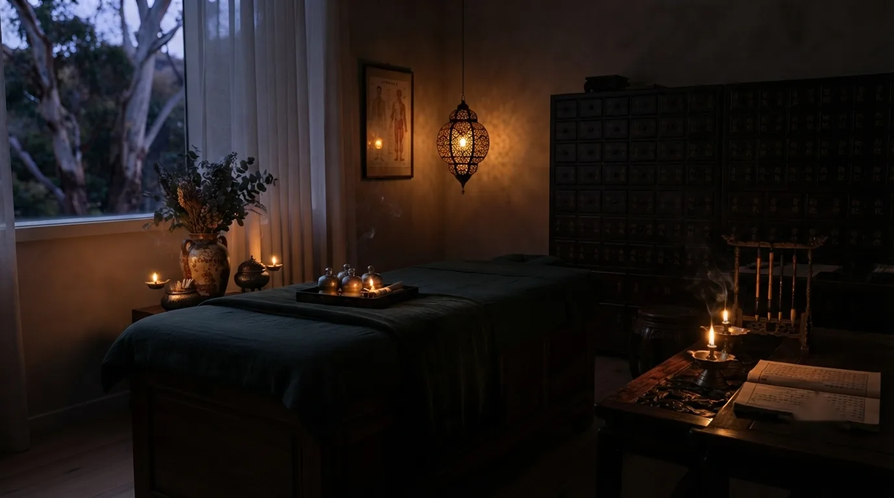
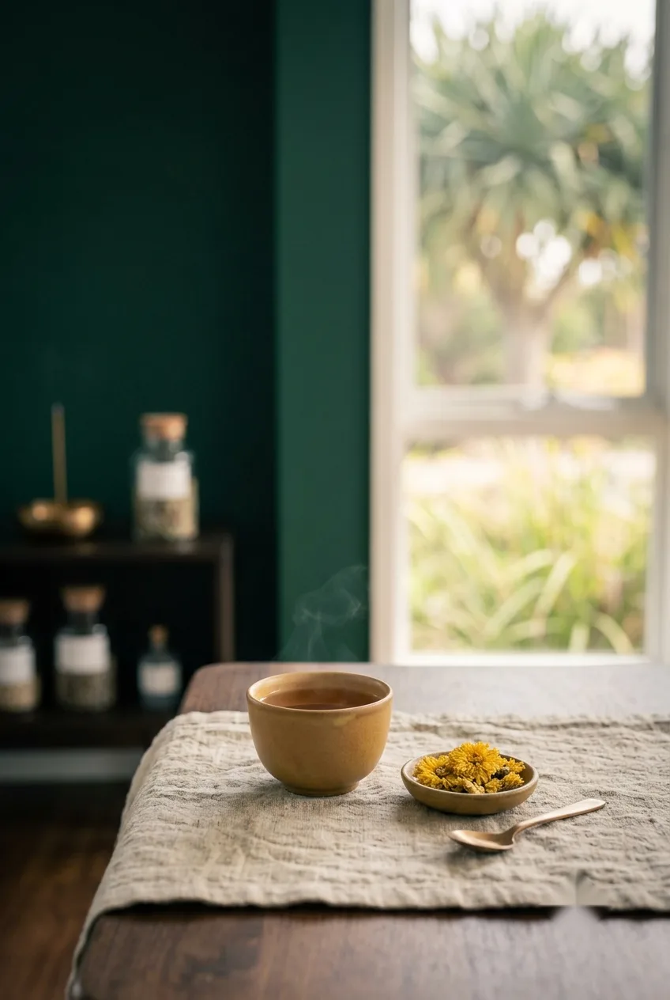
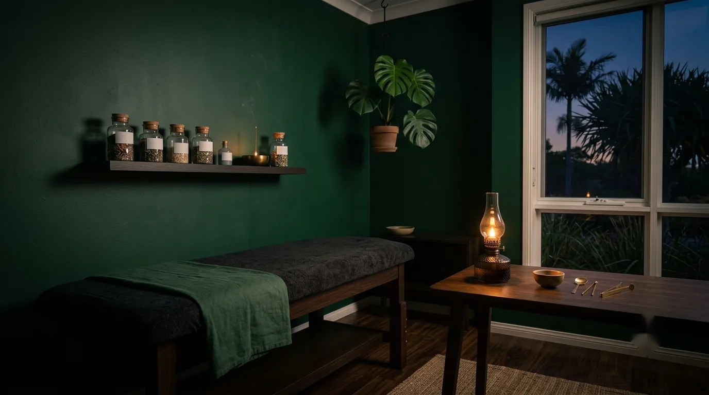

Initial Acupuncture
The usual starting point: a full history, a Chinese medicine assessment and your first treatment in one visit.
Read more →
Serving Sorrento
An easy drive down from Sorrento and Runaway Bay, for an unhurried appointment on the calmer end of the coast.
Sorrento's canal-front, Broadwater lifestyle is a world away from the buzz further south around Surfers Paradise, and Mermaid Beach carries a similar, unhurried feel. It's part of why clients from Sorrento and Runaway Bay make the drive down for their appointments.
Every visit starts with a proper conversation and a Chinese medicine assessment, so your treatment is shaped around your own presentation rather than a fixed protocol.
Treatments are provided by an AHPRA-registered practitioner.

Popular with Sorrento clients
The usual starting point: a full history, a Chinese medicine assessment and your first treatment in one visit.
Read more →Support for disrupted or restless sleep, considered alongside stress, mood and your overall health.
Read more →A focused session to check your progress and continue your personalised treatment plan.
Read more →
Good to know
Around 20 minutes by car, traffic depending. We're at 4/2546 Gold Coast Hwy, Mermaid Beach, south of the Runaway Bay area.
Yes, free street parking is available near the clinic.
Yes, we welcome clients from Sorrento, Runaway Bay and the surrounding Broadwater suburbs.
A 90 minute initial acupuncture appointment, which gives us time for a full history, assessment and your first treatment.
Appointments are available Tuesdays, 12:00pm to 5:00pm, a short drive from Sorrento.